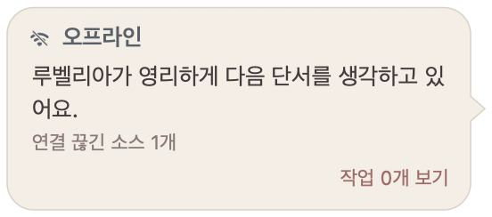

只显示已观测状态
气泡中的会话卡片显示空闲、运行中、等待输入或状态未知；不会推测代理的工作结果。
原生桌面伙伴
在 Rubelia 的气泡中查看已观测到的会话状态，并向选定的本地代理提交消息。消息被接收不代表任务已完成。
同一款原生应用可以在选定的共享或独立配置中连接 Tern，也可以不连接任何宿主、仅运行角色。
Apple 芯片 Mac macOS 13 及以上 内置角色 Rubelia
01 / 应用实拍
以下画面拍摄于隔离的离线环境，使用的是 macOS 原生应用 v0.3.2；截图中没有已连接的会话。


02 / 功能
利用已观测到的 Herdr 工作区信息与桌面角色的三种方式。
气泡中的会话卡片显示空闲、运行中、等待输入或状态未知；不会推测代理的工作结果。
从选定的本地代理卡片发送消息。Herdr 接收消息不代表工作完成；远程卡片仅供查看。
轻点头部或身体，或抚摸头部以触发反应。还可以拖动角色、调整大小。
03 / DESKTOP PET
独立的原生 macOS 桌面伙伴。露贝莉娅回应触摸，显示 Herdr、Tern 等已注册提供商的会话，并在来源允许时发送回复。无需宿主也能运行。
Apple Silicon Mac、macOS 13 或更新版本。源码构建需 Rust/Cargo、Bun、Node.js/npm、Xcode Command Line Tools，预构建无需这些工具。应用为 ad-hoc 签名，未经公证。Herdr 快照需兼容本地服务器（0.9.0+），回复另需 agent.prompt。可选 client-attach 自动启动需官方 Herdr 0.9.3 应用集成仓库的补丁和宿主构建指引，或实际支持钩子的宿主。原版 0.9.0/0.9.3 没有该钩子，插件安装不修改宿主。
brew install hanbong5938/tap/desktop-pet
desktop-pet --version
desktop-pet start
desktop-pet status
# Optional Herdr lifecycle integration:
herdr plugin install hanbong5938/herdr-desktop-petdesktop-pet --herdr-socket /actual/path/to/herdr-api.sock start — registered Herdr-adapter backend only, never the private control socket.
新配置档默认为 Auto。Connection 显示已注册提供商的实际连接，而非安装检测。提供商 ID 是不透明值，操作权限来自 capability，而非名称前缀或路径。Auto 是同时观察而非回退选择。远程来源只读；Tern 允许回复，不允许删除工作树。接受提交不代表代理完成。
desktop-pet profile show --json
desktop-pet start
desktop-pet statusCore 拥有公共 lifecycle 持久化与 auto_start（默认 on），额外键由注册集成拥有。Herdr 所有者仅在 lifecycle.json 不存在时，在首次 lifecycle 写入的共享 profile writer 内原子初始化 exit_with_herdr:true。已有文件缺键时读 false，显式 false 保留。旧布尔 enabled（含 false）迁移为 auto_start。端点、启动元数据、其他所有者字段保留；保存到 lifecycle.json 而非 preferences.json。坏 JSON／值报错不重置，保存失败保留原策略。Auto／无适配器无需 Herdr 也保持运行；下文 Herdr 端点／断连规则仅适用于 Herdr 专用选择。
参阅使用指南、准确的配置档与发现契约及 A→B 迁移。把 status / Connection 中的实际可执行文件、config、state 三个值填入 Tern Configure，成功 Save 后再 Connect。现有独立 Tern、beta、自定义配置档保留原地，绝不合并。
仅安装需要的集成。Herdr 是轻量消费者；Tern 不下载、构建、安装或自动启动原生应用。插件更新与卸载只影响集成，不删除共享应用、配置档或角色。常规应用更新不重新安装 Herdr 插件。
tern plugin install https://github.com/hanbong5938/tern-desktop-pet
desktop-pet profile show --json
desktop-pet startConfigure → Save → Connect: actual executable / config_dir / state_dir. No automatic profile merge, native install or startup.
预构建与源码安装在 core 检出目录中执行，而不是 Herdr 集成目录。默认仅预构建，下载或验证失败不会暗中回退源码编译。--source 明确仅构建当前 core，并使用该目录的 dist/DesktopPet.app。
git clone https://github.com/hanbong5938/desktop-pet.git
cd desktop-pet
# 已公开的不可变 v0.4.8 安装器及固定资产：
git checkout --detach v0.4.8
bash scripts/install.sh --prebuilt
# 若选择从同一个公开 v0.4.8 标签安装源码：
# bash scripts/install.sh --source不可变 v0.4.8 的默认／--prebuilt 使用精确公开固定资产，历史 checkout 保留各自 pin。下载／验证失败不暗中构建 source。显式 --source 构建所选 core checkout。standalone prebuilt 使用实际 OS 账户 home 的 Applications/DesktopPet.app，获准 source 使用 core 的 dist/DesktopPet.app。admission 可复用已验证健康所有者，请使用安装器报告的执行文件。账户 home 的原子 .local/share/desktop-pet/installation.json locator 仅为发现证据，不是权限。无效显式路径／locator fail closed；执行文件／签名／capability／origin 重新验证。Brew 拥有实际 formula/prefix，不暗中接管 live／已预约安装。
迁移与 profile 安全指南 · 当前 A′/B 验收 ledger。B 前必须结清旧 helper 终态，独立 native 同意；拥有安装的 manager retirement 前必须 readiness/Commit。
未发布的源码专用修正：Standalone 使用实际 OS 账户 home 的 .local/share/desktop-pet/libexec/DesktopPet.app，不受 HOME/XDG 覆盖影响。Brew 仍在已验证 formula prefix 的 libexec/DesktopPet.app，source 仍在精确 core checkout 的 dist/DesktopPet.app。不会自动移动、删除或接管现有 Applications 安装；旧 owner 不匹配时拒绝并提供显式修复指引。请使用安装器报告的执行文件及精确现有 config/state 路径。公开 beta.7 和上述不可变 v0.4.8 安装器仍保留旧 Applications 行为；此修正尚未发布。
04 / 角色
仅内置 Rubelia 一位角色。可选角色和服装包由独立的官方角色仓库维护。在支持此功能的应用版本中，角色浏览器仅提供已发布且受支持的扩展包，需明确操作才能下载、验证并应用。
浏览官方角色仓库05 / 使用须知
开始之前，了解以下几点。
不能。原生发行版面向运行 macOS 13 及以上版本的 Apple 芯片 Mac。
不是。选定本地会话的服务器支持 agent.prompt 时可以提交消息。成功仅表示 Herdr 已接收消息，并不表示代理已处理或完成任务。远程会话仅供查看。
不会。客户端连接时自动启动需要支持 client.attached 钩子的主机：可以将所提供的补丁应用到官方 Herdr 0.9.3 源码，或者使用明确支持该钩子的主机版本。原版 0.9.0 和 0.9.3 均不支持此钩子。
没有，只内置 Rubelia。其他可选扩展包及其使用条款请参阅独立的官方角色仓库。